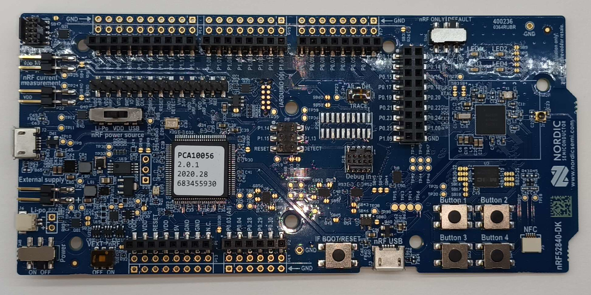
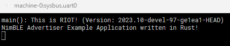
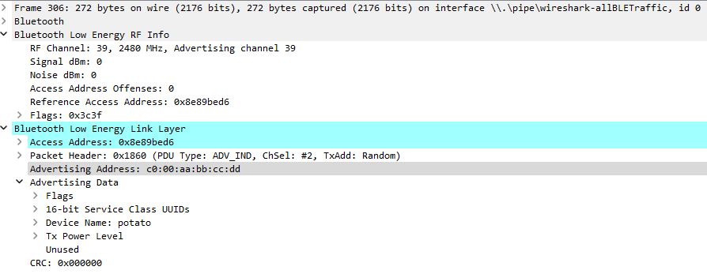
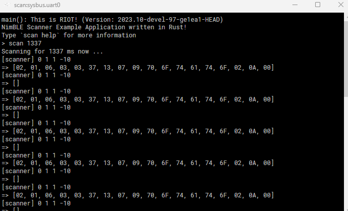
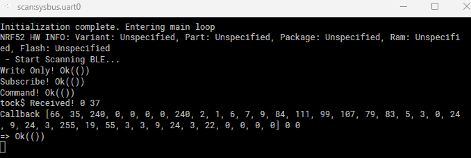
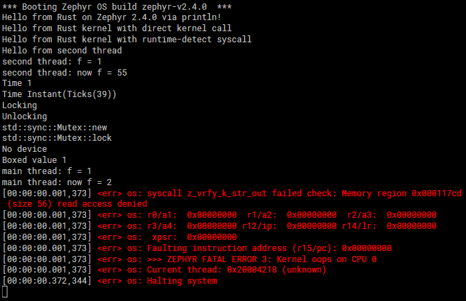

Are We IoT Yet?
The state of the Internet of Things in Rust.
With a focus on Bluetooth Low Energy (BLE), pure Rust programming, and simulation support on edge-devices, we are not IoT yet.
Status
| OS | Language | BLE Support | Application Rust Support | Renode Support |
|---|---|---|---|---|
| RIOT | C | 😄 | 🙂 | 😄 |
| tock | Rust | 😐 | 🙂 | 😄 |
| Embassy | Rust | 😄 | 😄 | ☹️ |
| Drogue IoT | Rust | 😄 | 😄 | ☹️ |
| Zephyr | C | 😄 | ☹️ | 😄 |
Trade-offs
- BLE and pure Rust programming are achievable using Embassy and DrogueIOT but simulation support is missing.
- BLE and simulation support using Renode while programming mainly in Rust is achievable with RIOT but requires proficiency in C.
- Pure Rust programming and simulation support using Renode work with tock but only provide very limited BLE support.
Open Tasks
We identified the following open tasks that would help make Rust IoT-ready:
- Add Renode support for Embassy and Drogue IoT
- Improve the RIOT rust wrappers and add support for NimBLE
- Have more complete and maintained Zephyr Rust support
- Build a full Bluetooth stack for tock
Introduction
Motivation
Rust is a programming language to build memory-safe, reliable, and stable software without race-conditions which is great for IoT applications. Thus, we want to check the state of IoT development using Rust. There is an ongoing demand from developers to use Rust as an alternative to C as it is an interesting and promising language with a lot of active development and research. As a promising alternative to C, it would also make embedded and IoT development easily accessible. So, we answer the question "Are We IoT Yet?". Therefore, we used two subquestions to be answered on our way:
- Is there a well-documented operating system maintaining IoT development using Rust?
- Is it possible to deeply test the implementations safely in a simulator?
IoT vs. Embedded
The Internet of Things (IoT) is a network of embedded devices communicating with each other. So, the big difference between embedded devices and IoT devices is the communication done with IoT devices. IoT devices are connected which is typically done via some wireless link. As Bluetooth Low Energy (BLE) is common these days not only in IoT devices but also in everyday devices, multiple development boards, and frameworks, we focused on wireless communication using BLE as it is widely spread. Additionally, BLE is designed for smart devices, so it is efficient and low-energy-consuming.
The state of Embedded and RTOS in Rust is already covered. Although RTOS is not that well supported in the tested frameworks, we pushed for IoT development as at least embedded development in Rust has official support. Because IoT development does not necessarily have a hard real-time requirement, some of the operating systems of the embedded Rust list looked promising although they did not meet the standards for an RTOS.
Setup
To be able to answer the subquestion on the safe test environment, we choose Renode as a simulator to run our implementations before flashing them to the actual hardware. Renode is a scalable simulation framework, especially for IoT devices. It is Open Source, fully deterministic, and stands out due to its continuous integration. Additionally, Renode can be used on most operating systems.
For the hardware side, we choose Nordic Semiconductors nRF52840dk board as it is quite common, widely used in research and industry, and thus is well supported for multiple frameworks. It is relevant that we used this exact board as we didn't just go for our chip being supported but also for the peripherals of the board. Additionally, Renode supports simulating these boards which is great for transparent and robust debugging before flashing on the boards. It is also useful if one does not have a board (yet) and already wants to start implementing and debugging.
Expectations
We expect Renode to behave the same as the boards when given the same code. Additionally, we expect BLE communication implementable using Rust without writing C code as we want new developers to only focus on programming Rust. The implementations should run stable. Additionally, we would expect maintained Rust support for the operating systems as otherwise, they most likely will not have any future value to the industry. Furthermore, we like the BLE stack of each operating system to be feature-rich, meaning more than a minimal implementation is required as most applications will need connectivity of the devices.
Bluetooth Stack Comparison
We compare five operating systems and their Bluetooth stacks on eleven characteristics. The intention is to enable a feeling of what the different operating systems are capable of. Afterward, we give a short summary of the different stacks used.
| Embassy | Drogue OS | tock | RIOT | Zephyr | |
|---|---|---|---|---|---|
| Bluetooth Stack | SoftDevice | SoftDevice | tock Stack | NimBLE | Zephyr Stack |
| Number of concurrent links | 20 | 20 | 32 | unlimited | |
| Advertising (Broadcaster) | |||||
| Connecting (central) | |||||
| Scanning (observer) | |||||
| Connectable (peripheral) | |||||
| Over-air device firmware updates | |||||
| Asynchronous, event-driven behaviour | |||||
| Implemented in Rust | |||||
| Implemented in C | |||||
| Bluetooth Mesh | Maybe | Maybe | |||
| L2CAP Connections |
Some of the operating systems use the same underlying Bluetooth stack. Thus we only have four different Bluetooth stacks:
- SoftDevice
- NimBLE
- Zephyr Stack
- tock Stack
SoftDevice
The SoftDevice includes a BLE protocol stack that is compliant with Bluetooth 5.1 (Host & Controller). It is built and provided by Nordic Semiconductor, the producer of the nRF52840 DK board we targeted. Thus, it provides the full support those boards are capable of. Sadly, it is not Open Source and written in C. So the usage of this stack makes it impossible to build an application purely based on Rust. But, it clearly enables the best usage of the hardware.
NimBLE
Apache NimBLE is a Bluetooth 5.4 compliant Bluetooth stack. It is part of the Apache Mynewt project which "is an open source operating system for tiny embedded devices" (Apache Mynewt). NimBLE approaches to replace the SoftDevice and thus supports multiple Nordics chipsets. It is also written in C but it is open source which might make it favorable over Nordics SoftDevice.
Zephyr Stack
The Zephyrs Bluetooth Stack is Bluetooth 5.3 compliant. It is part of the zephyrproject or the Zephyr RTOS which is open source and programmed in C. While the stack overall is fine, bringing it together with Rust is a hassle as described later in Zephyr.
tock Stack
The tock Bluetooth Stack is part of tock, a secure open source operating system for embedded devices which is completely written in Rust. Sadly, the tock Bluetooth Stack is still quite minimal, which results in not being able to connect. This limits the capability of this stack to advertising and scanning.
Hardware

We work with the nRF52840 DK a development board for the nRF52840 SoC which is a wide-spread readily available BLE capable chip that is supported in all of the mature frameworks we looked over. In particular all evaluated frameworks specifically support the nRF52840 DK board and pin layout specifically as well. With a few exceptions the nRF52 row of chips was also supported in the newer frameworks which didn't end up in this list for various reasons (see here for a list of them). Renode, the simulation framework we wanted to use for testing also has nRF52840 support and BLE examples with Zephyr.
Working in WSL2
When working on Windows through WSL there are two ways to flash the device.
The first method is to follow the segger wiki which means running the J-Link Remote Server on the Windows side and the J-Link Commander on the WSL side. Now you can interact and flash the device over the LAN from WSL to Windows.
This has some problems with some of the toolchains listed in the OS section because they do not expect this causing them to either not find the device or prompt reentering the connection IP multiple times per command.
Alternatively, there is usbipd-win which you install on your Windows and WSL machine.
This allows you to forward the USB connection to the device directly into the WSL machine.
For this, you first list all the devices connected to your Windows machine usbipd wsl list and then attach the SEGGER programmer to the WSL machine usbipd wsl attach --busid <deviceID>.
Note that some commands restart the device or cut the connection and reattaching is required.
Renode
Renode is an open source software development framework that lets you debug and test multi-node device systems. Through it, we can deterministically simulate scenarios and debug them before or in addition to testing on real devices. This generally makes it faster and easier to develop and verify behavior. Compared to directly emulating the processor and testing using that (e.g. directly using qemu) Renode has abstraction for specific board features and peripherals and has a plugin system to add components or modify their behavior.
For general information, the Renode Documentation is very helpful, but as a starting point a bit confusing. For reference on how peripherals are implemented the Source Code provides a good reference.
Installation
To install Renode you just need to download the appropriate release for your operation system and install it.
For Windows this is the .msi installer, for macOS the .dmg disk image, for Debian/Ubuntu this is the .deb software package.
After installation, you might want to make sure that the installed program's bin folder is part of your PATH variable so you can access the Renode binary everywhere.
Optionally install Wireshark for logging Bluetooth Low Energy Traffic.
Installed Platforms
Inside your Renode/platforms/cpus folder the configurations for different CPUs are listed and the Renode/platforms/boards folder contains a list of all supported boards.
These files act as a good reference when you need to adjust your board configuration to add or modify peripherals.
The Renode/scripts folder contains a collection of different simulations to try out and see how they are implemented.
Running a Simulation
For our specific use case where we already decided on the nRF52840 DK board and know we want to either run single-node or multi-node Bluetooth Low Energy simulations, building our scenario is fairly simple:
Here is a fully commented version of the tock BLE advertise example, which is oriented on the official BLE Tutorial:
# The system bus is the core peripheral that is always defined
using sysbus
# Setup a wireless medium
# https://renode.readthedocs.io/en/latest/networking/wireless.html
emulation CreateBLEMedium "wireless"
# Create another node
mach create
# Load the CPU/Board description from the "nrf52840-tock.repl" file into the current node
machine LoadPlatformDescription @nrf52840-tock.repl
# Connect the current node to the BLE network
connector Connect sysbus.radio wireless
# Set the variable $bin if not set already to the path of "output/ble_advertising.elf"
$bin?=@output/ble_advertising.elf
# Create another window that outputs and interacts with uart0 (defined in the Platform Description)
showAnalyzer uart0
# Control what is logged, in this case NOISY/everything
# https://renode.readthedocs.io/en/latest/basic/logger.html
logLevel -1
# Define some time scale, this is not explained in detail but is necessary
emulation SetGlobalQuantum "0.00001"
# Optionally logging of BLE Traffic with Wireshark
# https://renode.readthedocs.io/en/latest/networking/wireshark.html
emulation LogBLETraffic
# This macro method seems to be the preferred method to script the reset
# In this case it is just loading the binary ELF file on the one node
macro reset
"""
sysbus LoadELF $bin
"""
runMacro $reset
Notable here is that for setting up BLE we need to create the medium, connect our node to it, and set up some emulation time scale which is not really explained anywhere in detail.
Interesting is the emulation LogBLETraffic feature which if Wireshark is installed will open it and log the BLE traffic.
To run this simulation we now only need to start Renode, then in the Renode console load the script with the command include @tock_advertise.resc and start the simulation with the command start.
This can be done in one command from the command line as well as renode -e "include @tock_advertise.resc;start"
Running multi-node simulations
Here is a fully commented version of the tock BLE scanning example:
# The system bus is the core peripheral that is always defined
using sysbus
# Set variables for the binary paths for the advertiser and scanner
$adv_bin?=@output/ble_advertising.elf
$scan_bin?=@output/ble_passive_scanning.elf
# Setup a wireless medium
# https://renode.readthedocs.io/en/latest/networking/wireless.html
emulation CreateBLEMedium "wireless"
# Create the Advertiser Node under the name "adv"
mach create "adv"
# Load the CPU/Board description from the "nrf52840-tock.repl" file into the "adv" node
machine LoadPlatformDescription @nrf52840-tock.repl
# Connect the "adv" node to the BLE network
connector Connect sysbus.radio wireless
# Spawn a window for interacting with the uart0 interface of the "adv" node
showAnalyzer uart0
# Create the Scanner Node under the name "scan"
mach create "scan"
# Load the CPU/Board description from the "nrf52840-tock.repl" file into the "scan" node
machine LoadPlatformDescription @nrf52840-tock.repl
# Connect the "scan" node to the BLE network
connector Connect sysbus.radio wireless
# Spawn a window for interacting with the uart0 interface of the "scan" node
showAnalyzer uart0
# Define some time scale, this is not explained in detail but is necessary
emulation SetGlobalQuantum "0.00001"
# Optionally logging of BLE Traffic with Wireshark
# https://renode.readthedocs.io/en/latest/networking/wireshark.html
emulation LogBLETraffic
# On reset:
# Load the advertiser binary into the "adv" node
# Load the scanner binary into the "scan" node
macro reset
"""
mach set "adv"
sysbus LoadELF $adv_bin
mach set "scan"
sysbus LoadELF $scan_bin
"""
runMacro $reset
Again to run this scenario we can include the scenario and start, or just run renode -e "include @tock_demo.resc;start".
To add more nodes we need to make that we create the machine, load a description, and connect it to the BLE network:
mach create "name"
machine LoadPlatformDescription @nrf52840-tock.repl
connector Connect sysbus.radio wireless
# If we want UART console input/output
showAnalyzer uart0
In the reset macro we need to add the commands to load the appropriate programs into them:
mach set "name"
sysbus LoadELF @path/to/binary
Extendability
For both tock and RIOT, we ran into issues where the stock CPU configuration for the nRF52840 was not enough to properly simulate programs. For tock, this meant adding additional registers which is possible by just modifying the platform description and adding them. See the tock scenarios as an example of this.
For RIOT, the problem was the underlying UART implementation for the nRF52840, but this also is not a problem because Renode lets you load in your own peripherals as C# files.
Then at the start of your scenario file you load these custom C# peripherals in just like a scenario script with include @NRF52840_UART_MODIFIED.cs which you can then reference in e.g. your platform description file.
See the RIOT scenarios as an example of this.
Quickstart Guide
We provide examples, Dockerfiles, and Renode scenario files for tock and RIOT in the repository. These files act both as a demonstration of how Rust development for these frameworks looks like and as an entry-point to trying it out.
Setup
To build the examples only Docker needs to be installed.
- Clone the repository:
git clone https://github.com/ds-kiel/AreWeIoTYet - Build tock:
cd tock;docker build --output=output --target=binaries .;cd .. - Build RIOT:
cd riot;docker build --output=output --target=binaries .;cd ..
To run the scenarios Renode and Wireshark need to be installed.
-
Run the RIOT advertiser example:
cd riot;renode -e "include @riot_advertise.resc;start" -
Run a RIOT demonstration of advertiser and scanner:
cd riot;renode -e "include @riot_demo.resc;start" -
Run the tock advertiser example:
cd tock;renode -e "include @tock_advertise.resc;start" -
Run a tock demonstration of advertiser and scanner:
cd tock;renode -e "include @tock_demo.resc;start"
RIOT
RIOT is a real-time multi-threading operating system written in C.
It has support for a large variety of devices, peripherals, and protocols.
For us most notably it explicitly supports the nrf52840dk board and BLE through a port of the Apache Mynewt NimBLE stack.
[😄] Bluetooth Status
NimBLE is fully compliant with the Bluetooth 5.4 specifications with support for Bluetooth Mesh. Also notably there exists official certification for the version 1.1.0 of NimBLE that is Bluetooth 5.0 compliant.
[🙂] Rust Status
RIOT has official Rust support and proper instructions on how to use it.
Generally, it works by running C2Rust and generating Rust bindings for the C code automatically.
In addition, there are provided wrappers that provide more proper methods of interacting with some components.
At the time of writing, there are no provided wrappers for using the NimBLE stack, so BLE interaction is done in unsafe {} blocks using the Rust to C bindings.
By default, there is only a rust-hello-world and rust-gcoap example. We additionally provide a rust-ble-advertising and rust-ble-scanning example.
[😄] Renode Status
RIOT works in Renode with a modified UART driver that accounts for the way RIOT implemented their serial output. Thanks to the architecture of Renode, this modified UART driver can be provided externally.
Provided are Dockerfiles for building the examples and directly running them in renode.
Examples
RIOT provides a few examples for Bluetooth Low Energy using both their Nimble and Skald drivers, but they are written in C. There are also a few Rust examples.
RIOT's system for using Rust is pretty decent but the Wrapper Library is as of writing this still lacking in quite a lot of aspects, especially when it comes to BLE.
This leads to us having to write wrapper code for the C interface ourselves by mirroring C structures and a lot of unsafe sections.
BLE Advertising
The Rust BLE Advertising Example uses Nimble to send advertisements.
This is what it looks like in renode:

And this is how the advertisement packets that are sent are structured:

BLE Scanning
The Rust BLE Scanning Example registers a scan command and when it is entered either with or without a timeout argument it waits that long and prints out the received advertisements.
When running the riot_demo this is what the scanner receives:

Here the received arrays are the packets send by the advertiser in raw byte format. Note here "70 6F 74 61 74 6F" which is the device name of the advertiser.
Build & Run Instructions
For the Rust components we first need rustup:
curl --proto '=https' --tlsv1.2 -sSf https://sh.rustup.rs | sh
For building the c2rust bindings we need a few more dependencies, mainly a LLVM toolchain:
# ubuntu:22.04
apt-get install cmake pkg-config
apt-get install \
llvm-14 \
clang-14 \
clang-tools-14 \
lld-14 \
llvm \
clang \
clang-tools
apt-get install \
libclang-dev \
libssl-dev \
llvm-dev \
libclang-14-dev
cargo install c2rust --git https://github.com/immunant/c2rust
Building RIOT itself only requires a few build tools
apt-get install gcc-arm-none-eabi make gcc-multilib libstdc++-arm-none-eabi-newlib openocd gdb-multiarch doxygen wget unzip python3-serial(ubuntu:22.04)
We then configure rustup to use the right toolchain:
rustup target add thumbv7em-none-eabihf --toolchain stable
clone RIOT:
git clone https://github.com/RIOT-OS/RIOT
copy our examples into the examples folder and build them:
cd RIOT && make BOARD=nrf52840dk -C examples/rust-nimble_advertisercd RIOT && make BOARD=nrf52840dk -C examples/rust-nimble_scanner
The build artifacts we care about in the end are:
RIOT/examples/rust-nimble_advertiser/bin/nrf52840dk/nimble_advertiser.elf- The build advertiserRIOT/examples/rust-nimble_advertiser/bin/nrf52840dk/nimble_scanner.elf- The build scanner
Build with Docker
A Dockerfile is additionally provided that when run will build all these artifacts here.
By running docker build --output=output --target=binaries . The docker image will be built and the output artifacts will be extracted and put into a folder called output.
Run on Device
The recommended way of flashing and interacting with the device is using RIOT's build system:
PROGRAMMER=jlink make BOARD=nrf52840dk -C examples/<example> flash
PROGRAMMER=jlink make BOARD=nrf52840dk -C examples/<example> term
This will directly rebuild and flash the examples to the device.
Run on Renode
The build ELF files can directly be loaded into renode.
The examples provide two renode scenarios to play around with: riot_advertise and riot_demo.
riot_advertise
Run with:
renode -e "include @riot_advertise.resc;start"
This starts the advertising example and Wireshark to capture the Bluetooth Low Energy Traffic:
riot_demo
Run with:
renode -e "include @riot_demo.resc;start"
This starts both the advertising and scanning examples.
Notes on renode:
The wiki of RIOT has a small section on how it already supports Renode as an emulator, but when trying to emulate device-specific functionality like BLE we still have a problem for the NRF boards.
Specifically the way RIOT implemented UART for the nRF52840 by relying on the Shortcut functionality that is not implemented (as of yet) in Renode's nRF52840 UART driver.
This means we need to load a patched NRF52840_UART_MODIFIED.cs driver and use it instead.
Tock
Tock is an embedded operating system written in Rust. It is designed to be able to run multiple concurrent, mutually distrustful applications on embedded platforms. For us most notably it explicitly supports the nRF52840 DK board and minimal BLE.
[😐] Bluetooth Status
As of the writing of this, the tock Bluetooth stack only supports advertising and passive scanning.
[🙂] Rust Status
Tock is written in Rust which makes it a very good candidate for developing code in Rust. But for user application code the libtock C library contains way more detailed examples than the libtock Rust library.
For BLE specifically there are only ble_advertising and ble_passive_scanning examples written in C.
We additionally provide Rust ble_advertising and ble_scanning examples, but notable in them is that to use the BLE features we had to directly use Tock's Syscall Interface as there are no wrappers provided for doing so.
[😄] Renode Status
Tock works in Renode with an adjusted CPU configuration that accounts for some missing registers which otherwise cause a bootloop.
Provided are Dockerfiles for building the examples and directly running them in renode.
Examples
The Tock C library provides a few Bluetooth Low Energy Examples whereas the Rust Library does not so we have translated two of these examples to Rust. One problem here is that the C library actually provides proper support for interacting with the BLE Advertising Driver but the Rust library (currently) doesn't. This means we had to port these parts and have to interact directly through the abstraction of the syscall interface with the driver ourselves.
BLE Advertising
The Rust BLE Advertising Example is a rough translation of the C Advertising Example and libtock-c library code. It sets the device up to send an advertisement of the device "TockOS" and some data packet every 300ms.
This is how the UART Console looks in renode:

And this is how the advertisement packets that are sent are structured (they are sent on the three primary advertising channels 37, 38, and 39):

BLE Scanning
The Rust BLE Scanning Example is a rough translation of the C Scanning Example and libtock-c library code. It waits until it receives exactly one advertisement and prints it to the screen.
When running the tock_demo this is what the scanner receives:

Build & Run Instructions
When working with libtock-rs we are automatically also building tock itself.
For building libtock-rs we first need rustup:
curl --proto '=https' --tlsv1.2 -sSf https://sh.rustup.rs | sh
and a few other dependencies:
apt-get install git python3 ninja-build pkg-config(ubuntu:22.04)
We then clone the libtock-rs repository recursively to also clone tock:
git clone --recursive https://github.com/tock/libtock-rs
and inside the libtock-rs repository we run the setup:
make setup
Note here that running make setup also builds a custom branch of qemu which requires some dependencies to be installed.
apt-get install libglib2.0-dev libfdt-dev libpixman-1-dev zlib1g-dev libgtk-3-dev(ubuntu:22.04)
After that, our examples need to be copied into the examples folder and can be built with:
make nrf52840 EXAMPLE=ble_advertisingmake nrf52840 EXAMPLE=ble_scanning
As tock separates the kernel and modules, we also need to build the kernel separately:
cd libtock-rs/tock/boards/nordic/nrf52840dk && make all
After this, we will have the following useful artifacts:
libtock-rs/tock/target/thumbv7em-none-eabi/release/nrf52840dk.bin-tockfor thenrf52840dklibtock-rs/target/thumbv7em-none-eabi/release/examples/ble_advertising.tab- The Advertising Modulelibtock-rs/target/thumbv7em-none-eabi/release/examples/ble_scanning.tab- The Scanning Modulelibtock-rs/target/thumbv7em-none-eabi/release/examples/ble_advertising.tbf- The ELF file of the Advertising Modulelibtock-rs/target/thumbv7em-none-eabi/release/examples/ble_scanning.tbf- The ELF file of the Scanning Module
Build with Docker
A Dockerfile is additionally provided that when run will build all these artifacts here.
By running docker build --output=output --target=binaries . The docker image will be built and the output artifacts will be extracted and put into a folder called output.
Note here that the ble_advertising.elf / ble_scanning.elf are already merged with the kernel and can be directly used with renode.
Run on Device
When wanting to run these examples on actualnrf52840dk boards we can follow the guidelines of tock and libtock-rs which means to build the kernel with make install and the examples with make flash-nrf52840 EXAMPLE=<example> instead and have the board plugged in over USB.
If we instead want to do this more manually after obtaining the artifacts as above or through docker we can instead install the kernel and examples with:
-
tockloader flash --address 0x0 --board nrf52840dk --jlink nrf52840dk.bin -
tockloader install --board nrf52840dk --jlink ble_advertisingor -
tockloader install --board nrf52840dk --jlink ble_scanning
This will install the .tab files with the respective names on a connected board with tock flashed on.
Depending on how the board is connected and the operation system used some command line options might need to be changed.
Note that as of the writing of this, tockloader does not support Windows for flashing and installing tock and modules, see here on how to use WSL2 for this instead.
Run on Renode
To run the examples with tock in renode and preserve all our debug symbols we first need to merge the tbf files with the kernel:
arm-none-eabi-objcopy --update-section .apps=ble_advertising.tbf nrf52840dk.elf ble_advertising.elfarm-none-eabi-objcopy --update-section .apps=ble_scanning.tbf nrf52840dk.elf ble_passive_scanning.elf
The merged ELF files can then be directly loaded in renode.
The examples provide two renode scenarios to play around with: tock_advertise and tock_demo.
tock_advertise
Run with:
renode -e "include @tock_advertise.resc;start"
This starts the advertising example and Wireshark to capture the Bluetooth Low Energy Traffic:
tock_demo
Run with:
renode -e "include @tock_demo.resc;start"
This starts both the advertising and scanning examples.
Notes on renode:
The modified nrf52840-tock.repl configuration is needed to run tock modules in renode.
The most notable change is making the following areas of memory writable:
regout0: Memory.ArrayMemory @ sysbus 0x10001304
size: 4
pselreset: Memory.ArrayMemory @ sysbus 0x10001200
size: 8
nfcpin: Memory.ArrayMemory @ sysbus 0x1000120C
size: 4
This is because the startup of tock for the nrf boards requires configuring these registers.
If these registers are not writable then renode will be stuck in a reboot loop failing constantly to configure the device.
Embassy
[😄] Bluetooth Status
As Embassy is using Nordic Semiconductor's SoftDevice which is Bluetooth 5.1 qualified, and very well tested. Probably all needed features will be available.
[😄] Rust Status
Embassy is written in Rust, and all the examples are also written in Rust. A wide selection of BLE examples meant to be used with the SoftDevice is also directly available.
[☹️] Renode Status
Embassy itself does boot in Renode but getting output and debug information as Embassy intends is not supported.
While it is possible to boot Embassy in Renode with the SoftDevice enabled, we were not successful in getting Embassy on Renode to work with the Bluetooth features of the Softdevice.
Examples
The nrf-softdevice repository includes multiple examples. Their source code can be found in examples/src/bin.
BLE Advertise
This example spawns BLE advertises with the device name "HelloRust". If you want to modify the name, make sure to modify the hardcoded string in the adv object.
BLE BaS Central
cargo run --bin ble_bas_central
This example provides a GATT server with a Battery Service. The central device can read and write the battery status.
BLE BaS Peripheral
cargo run --bin ble_bas_peripheral
This example provides a GATT server with a Battery Service and a Foo Service. The peripheral device sends notifications on its battery status.
BLE Bond Peripheral
cargo run --bin ble_bond_peripheral
This example provides a GATT server with a Battery Service. The more interesting part is the use of a bonder with its security handler. This leads to displaying a passkey on connection.
BLE DIS BaS Peripheral Builder
cargo run --bin ble_dis_bas_peripheral_builder
This example provides a GATT server with a Device Information Service and a Battery Service.
BLE L2CAP Central
cargo run --bin ble_l2cap_central
This example uses the L2CAP on top of the BLE connection. This node is transmitting data.
BLE L2CAP Peripheral
cargo run --bin ble_l2cap_peripheral
This example uses the L2CAP on top of the BLE conection. This node is receiving data.
BLE Peripheral onoff
cargo run --bin ble_peripheral_onoff
This example makes use of the buttons on the board. Press button 1 to enable BLE or press button 2 to disable BLE. On connection the device creates a GATT server with a Foo Service.
BLE Scan
cargo run --bin ble_scan
This example scans for BLE devices. It reports the type or the discovered devices as info text.
Flash
cargo run --bin flash
This example erases the application from the board but should leave the softdevice on it.
Build & Run Instruction for Board
Prerequistits
For Ubuntu 22.04 make sure that the following are installed:
- pkg-config
- libudev-dev
- probe-run
- probe-rs-cli
If they are not yet installed, do:
apt-get install libudev-dev probe-run probe-rs-cli(Ubuntu 22.04)
Embassy without Softdevice
Install Embassy
This setup is not able to use BLE and only includes the operating system. The embassy team provides build and run instructions in their repository.
- Clone Embassy:
git clone https://github.com/embassy-rs/embassy.git - Update Submodules:
git fetch
Run Embassy example
- Change directory to the cloned embassy directory
- Then change to the examples folder of the board:
cd examples/nrf52840 - Connect the board
- Clear the board:
probe-rs-cli erase --chip nrf52840 - Use
cargo runto build and run the example on the board. For the blinky example, do:
cargo run --bin blinky --release
Now the example should perform as expected. For the blinky example this is a blinking LED 1. Other examples are described in the next subchapter.
Combining Embassy with Softdevice
The instructions are described in the embassy-rs/nrf-softdevice repoository. Below you can find a similar instruction.
Get the SoftDevice and the embassy version that is capable of using it:
- Clone the nrf-softdevice repository:
- Download a fitting SoftDevice from Nodics Webpage. I used S140, version 7.3.0
- Unzip the SoftDevice archive into the examples folder of the nrf-softdevice repository
After that prepare rust and the board:
- Run:
rustup update - Clear the board:
probe-rs-cli erase --chip nrf52840
Now flash the SoftDevice to the board:
- Flash the SoftDevice to the board:
probe-rs-cli download --chip nrf52840 --format hex s140_nrf52_7.3.0_softdevice.hex - If necessary edit the RAM in Cargo.toml according to https://github.com/embassy-rs/nrf-softdevice, section "Configuring a SoftDevice"
Run an embassy-softdevice example:
- To run the embassy BLE BatteryService Peripheral, do:
cd examples && cargo run --bin ble_bas_peripheral
Remarks regarding Renode
We were not able to get Embassy BLE functionality to work on Renode.
For documentation purposes, we list the following problems for getting Embassy to work on Renode:
Solved Problems:
Known Open Problems:
Unknown Open Problems:
- The program waits forever after sending an advertisement once [2]
The following subsections go into the details of these.
Booting with the SoftDevice [Solved]
Embassy on ony nRF52 chip (so including the nRF52840) is using Nordic Semiconductor's closed source SoftDevice for some features but most importantly Bluetooth.
The first hurdle when building Embassy with the SoftDevice normally is how to configure and combine those two generally, as a lot of it depends on the exact version and configuration you are going to use.
When downloading the SoftDevice we get a .hex file in the Intel HEX format, so as a preparation, we convert that to a flat binary file:
objcopy --input-target=ihex --output-target=binary s140_nrf52_7.3.0_softdevice.hex s140_softdevice.bin
Generally speaking, what should work is loading the binary and matching SoftDevice like this:
sysbus LoadELF $binary
sysbus LoadBinary $softdevice 0x00
But when you load them like this, Renode assumes the VectorTableOffset (which is where the Vector Table is positioned) is in the ELF file / in the binary. This boots up correctly but the SoftDevice is not initialized, so the program operates like no SoftDevice is loaded.
To fix this we tell Renode that we want the Vector Table of the SoftDevice to be loaded:
cpu VectorTableOffset 0
But for some reason, this already causes a boot loop and our program to never load.
To cite the API docs included with the SoftDevice:
* The MBR assumes that either @ref MBR_BOOTLOADER_ADDR or @ref MBR_UICR_BOOTLOADER_ADDR is set to
* the address where the bootloader will be copied. If both addresses are set, the MBR will prioritize
* @ref MBR_BOOTLOADER_ADDR.
For the SoftDevice 140 NRF52 7.3.0 these are defined as:
/** @brief Location (in the flash memory) of the bootloader address. */
#define MBR_BOOTLOADER_ADDR (0xFF8)
/** @brief Location (in UICR) of the bootloader address. */
#define MBR_UICR_BOOTLOADER_ADDR (&(NRF_UICR->NRFFW[0]))
By default MBR_BOOTLOADER_ADDR seems to be set to 0, so after that the bootloader tries MBR_UICR_BOOTLOADER_ADDR which in our setting is also by default 0, which causes the boot loop.
The actual SoftDevice starts directly after the MBR, which seems to be at address 0x1000 (given we load it at 0x0000):
/** @brief The size that must be reserved for the MBR when a SoftDevice is written to flash.
This is the offset where the first byte of the SoftDevice hex file is written. */
#define MBR_SIZE (0x1000)
So by either setting MBR_UICR_BOOTLOADER_ADDR to 0x1000 or patching the SoftDevice binary at address MBR_BOOTLOADER_ADDR to be 0x1000 we can get the SoftDevice to boot up correctly.
Using Bluetooth with the SoftDevice
Enabling Bluetooth functionality with the SoftDevice requires a temperature sensor peripheral, which is not implemented in Renode.
From the API documentation, this seems to be the case because of some problems with rssi sampling ( 153 , 225 ):
ERRATA-153 and ERRATA-225 require the rssi sample to be compensated based on a temperature measurement.
By providing dummy sensor values we were able to get further into the Bluetooth Stack and make the examples send a single burst of advertisements.
After that, the program seemed to get stuck in the embassy_executor::arch::thread::Executor::run at a wfe instruction seemingly waiting for a timer interrupt that never happens.
We were not able to further figure out where the exact problem lies.
General Problems
A general problem with combining Embassy and Renode is the method Embassy uses for debug output. Compared to other frameworks that treat serial output as the standard way of communication, Embassy treats serial like any other peripheral and has no shortcuts for using it. This is rather good when working with the SoftDevice that has some caveats with regards to Interrupt priority and how Interrupts can be used after the SoftDevice has been initialized.
Even better Embassy on the NRF makes use of SEGGER's Real Time Transfer technology through the programmer on the board to deliver general and debug information or even warnings and crashes. The message transfer happens using the defmt library which encodes the information efficiently so e.g. fixed strings can be referenced by index instead of being repeatedly sent over the wire.
With Renode the problem is that that RTT as a communication method is not implemented and for the output to be actually useful decoding for defmt needs to be implemented additionally.
Without this working with Embassy and debugging it is extremely difficult given you are basically working blind and even the Embassy NRF-Softdevice itself assumes you have this output for configuring the memory for the SoftDevice.
Sending an Advertisement Once
We are able to get the advertiser example running in Renode but after sending the following packets it freezes in the before mentioned embassy_executor::arch::thread::Executor::run function.

Drogue IoT
[😄] Bluetooth Status
Drogue builds on embassy which is using Nordic Semiconductor's SoftDevice. The SoftDevice is Bluetooth 5.1 qualified, and very well tested probably all needed features will be available.
[😄] Rust Status
Drogue and Embassy are written in Rust, and all the examples are also written in Rust. There is exactly one BLE example for the nRF 52840 DK board but there are also three further examples for other boards.
[☹️] Renode Status
As Drogue builds on top of Embassy, this status is as bad as it is for Embassy.
Embassy itself does boot in Renode but getting output and debug information as Embassy intends is not supported. It is also possible to boot Embassy in Renode with the SoftDevice enabled.
We were not successful in getting Embassy on Renode to stably work with the Bluetooth features of the Softdevice.
Prerequisites
For Ubuntu 22.04 make sure that the following are installed:
- pkg-config
- libudev-dev
- probe-run
- probe-rs-cli
- bluez
- bluez-meshd
Examples
There is exactly one example for the nRf52840 dk board in Drogue: A Bluetooth Mesh example
Setup Drogue-IoT / Drogue-Device
It is necessary to open multiple terminal windows to setup and run the example.
Setup the Example
Clone the drogue github repository and change to its directory:
git clone https://github.com/drogue-iot/drogue-device.git
cd drogue-device
To later be able to stop the bluetooth mesh process, do now:
sudo service bluetooth stop
sudo /usr/lib/bluetooth/bluetooth-meshd -nd --debug
Next, we need a new terminal window as this one will stay busy. There we start the mesh network:
mesh-cfgclient
In case an error occurs about not finding the config_db.json, run:
[mesh-cfgclient]# create
Now we created the mesh network to which we want to add the node running the drogue example.
In another new terminal window, change directory to the bluetooth mesh example:
cd <drogue-device-git>/examples/nrf52/nrf52840-dk/bt-mesh
To run the example without seeing the debug messages, do:
cargo run --release
The output should be: (HOST) INFO success!
USB Permissions
This might run into an error:
USB error while opening USB device: Access denied (insufficient permissions)
To read the USB permissions on Ubuntu 22.04 for the board, do:
lsusb
This will output an id for the connected board which we will use in the next step:
lsusb -d <id for the board>
You will get the bus number and the device number here. To now read the permissions for the board using the acquired numbers, do:
ls -l /dev/bus/usb/<bus-nr>/<device-nr>
The output should look like: crw-rw-r-- 1 root root 189, 8 Jul 18 06:48
Now, to modify the USB permissions open the file /etc/udev/rules.d/50-oxidize-global.rules and add the board:
# udev rules to allow access to USB devices as a non-root user
# nRF52840 Dongle in bootloader mode
ATTRS{idVendor}=="1915", ATTRS{idProduct}=="521f", TAG+="uaccess"
# nRF52840 Dongle applications
ATTRS{idVendor}=="2020", TAG+="uaccess"
# nRF52840 Development Kit
ATTRS{idVendor}=="1366", ENV{ID_MM_DEVICE_IGNORE}="1", TAG+="uaccess"
Then reload the permission rules:
sudo udevadm control --reload-rules
It might be interesting to read the permissions again at this time. This is then done by repeating the first steps. The output should be changed from:
crw-rw-w-- 1 to crw-rw-r--+ 1.
Now, retry to run the example on the board:
cargo run --release
Run the Example
Go back to the terminal window running the mesh configuration client and do:
[mesh-cfgclient]# discover-unprovisioned on
This will scan for new devices and will generate output similar to:
Scan result:
rssi = -36
UUID = SOMEINCREDIBLYLARGEHEXID
OOB = A040
To end the scanning and bind the discovered node to the mesh network, do:
[mesh-cfgclient]# discover unprovisioned off
[mesh-cfgclient]# provision SOMEINCREDIBLYLARGEHEXID
Which then generates the output:
Provisioning started
Assigning address for 1 elements
Provisioning done:
Mesh node:
UUID = SOMEINCREDIBLYLARGEHEXID
primary = 00aa
elements(1):
You can now play with the given example or simply exit and end the client.
Remarks
I didn't erase the board before staring the setup, so the nrf-softdevice already was on the chip.
Sources for Drogue.Device:
https://book.drogue.io/drogue-device/dev/getting_started.html
https://github.com/drogue-iot/drogue-device/tree/main/examples/nrf52/nrf52840-dk/bt-mesh
https://book.drogue.io/drogue-device/dev/examples/nrf52/nrf52840-dk/bt-mesh/README.html
https://embedded-trainings.ferrous-systems.com/troubleshoot-cargo-flash.html
Zephyr
Zephyr is a small real-time operating system for connected, resource-constrained and embedded devices written in C.
For us the most interesting parts are the nrf52840dk and BLE support in the context of Rust.
[😄] Bluetooth Status
Zephyr's Bluetooth Stack is highly configurable and Bluetooth v5.3 compliant. Support for all combinations of Host and Controllers is provided and the stack generally is Bluetooth-SIG qualified.
[☹️] Rust Status
There is no official Rust support for Zephyr.
We in particular looked at tylerwhall/zephyr-rust which makes it possible to write Rust code for Zephyr but lacks any support for Bluetooth features.
[😄] Renode Status
The main demonstrations of Renode's BLE capabilities is done on Zephyrs BLE examples and documented here. This is for C code though. As at the time of writing there are no Rust bindings for the Bluetooth stack we can not evaluate the Rust side of this too deeply.
Our experiments with tylerwhall/zephyr-rust showed that it works on their example projects and building them for the nrf52840dk_nrf52840.

The crash is according to their README intended. For the serial output to show in Renode the repl for the nrf52840 needs to be modified so that easyDMA is off for the UART ports:
uart0: UART.NRF52840_UART @ sysbus 0x40002000
easyDMA: false
-> nvic@2
uart1: UART.NRF52840_UART @ sysbus 0x40028000
easyDMA: false
-> nvic@40
Other Considered Operation Systems
FreeRTOS
No official Rust support, neither FreeRTOS-rust or freertos.rs looked like they are in active development.
Apache Mynewt
While there is a Rust tutorial there doesn't seem too much information on official bindings and using Rust otherwise.
Other + Rumble
We also looked at using (Rust) RTOS without their own BLE stacks in combination with Rumble but that project also does not look like it is in active development.